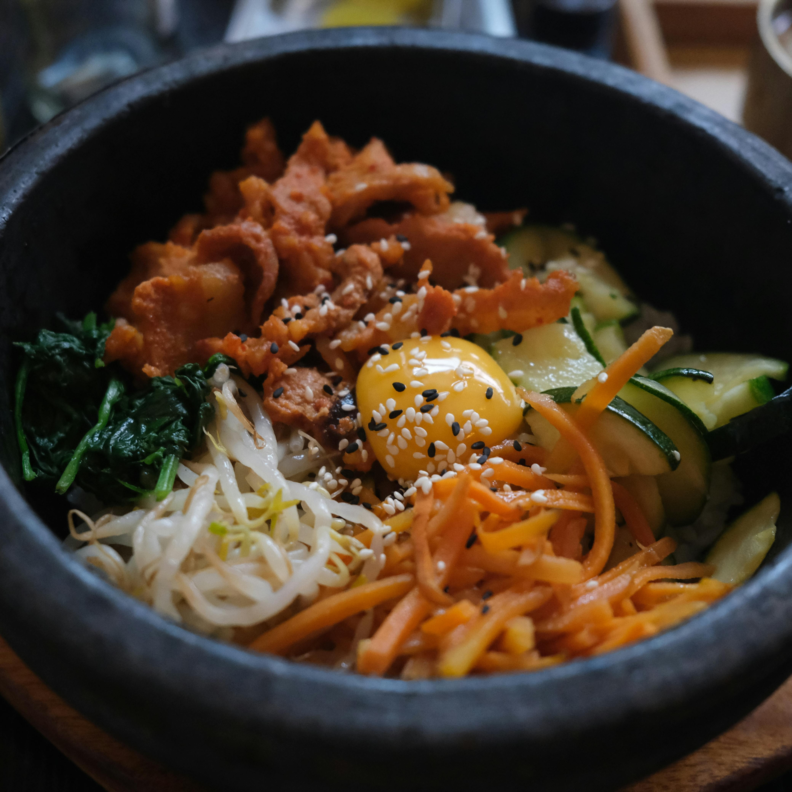

Prep Time: 30 mins | Cook Time: 30 mins | Total Time: 1 hr | Servings: 4
Photo by J MAD from Pexels
This bibimbap recipe makes a popular and delicious Korean meal of warm white rice topped with vegetables, beef, a fried egg, and spicy gochujang chili paste. Traditionally, bibimbap was eaten on the eve of the Lunar New Year, to use up any leftovers before the start of the new year.
This recipe is by mykoreaneats from Allrecipes.